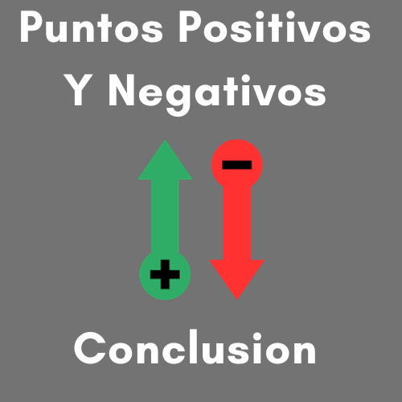
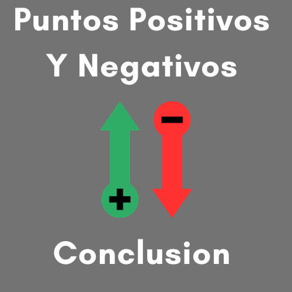
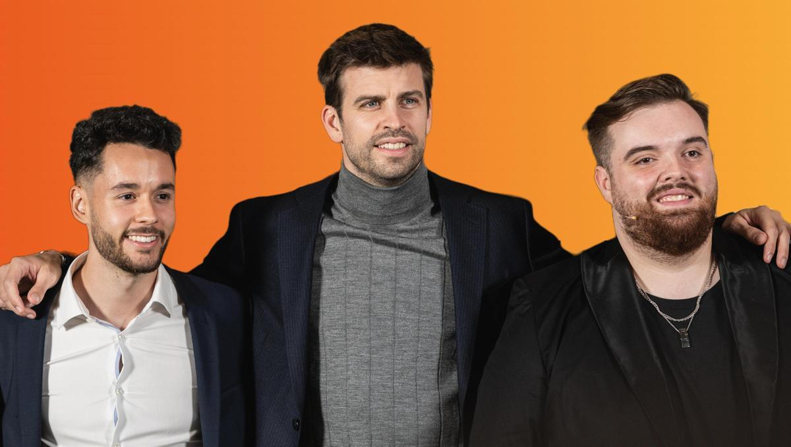

LOS INFLUENCERS
El impacto En La Sociedad De Los Influencers Y Opiniones
 

ヰ ヰ юヰю
( )
El influencer tiene un fuerte impacto en la sociedad actual. Este intermediario tiene la capacidad de influir en el comportamiento del consumidor gracias a su apariencia similar a una persona común, a su posición cercana con su audiencia y su capacidad de exposición a los medios de comunicación.
Los "influencers" tienen un impacto significativo en nuestra sociedad, tanto positivo como negativo. En términos negativos, algunos de los impactos que se han observado incluyen:
Fomento de estereotipos de belleza: Los influencers a menudo promueven estándares poco realistas de belleza, lo que puede llevar a una mayor presión social para cumplir con estos estándares. Esto puede ser especialmente problemático para los jóvenes y adolescentes que están en una etapa de desarrollo de su autoestima.
Fomento del consumismo: Los influencers a menudo promueven productos y marcas, lo que puede llevar a una cultura del consumismo excesivo. Esto puede llevar a la acumulación de deudas y a una mayor huella ecológica.
Difusión de desinformación: Algunos influencers pueden usar su plataforma para difundir información errónea, lo que puede tener un impacto negativo en la salud y el bienestar de las personas. Esto es especialmente cierto en el caso de temas de salud, donde la información errónea puede ser peligrosa.
Generación de ansiedad y estrés: Los influencers pueden crear una sensación de ansiedad y estrés en las personas al presentar una vida "perfecta" que parece inalcanzable para la mayoría. Esto puede llevar a sentimientos de insuficiencia y a una mayor presión social para lograr el éxito y la felicidad.
En resumen, mientras que los influencers tienen la capacidad de difundir mensajes positivos y promover cambios positivos en la sociedad, también tienen la capacidad de influir negativamente en la forma en que las personas piensan y actúan. Es importante tener en cuenta estos impactos negativos y ser críticos con la información que recibimos de las redes sociales
Aca les dejamos algunas opiniones del publico
-Creo que los influencers son personas que quieren ayudar a los demás, especialmente a su audiencia, dentro del nicho al que pertenecen. Claro, es genial que puedan convertir ese gusto por ayudar y orientar a los demás en un negocio muy redituable. Trabajo con ellos frecuentemente para mis clientes y la mayoría son personas muy genuinas y amigables. Así que, en general, los influencers me agradan mucho. :)-
- Que son personas que tuvieron una visión muy acertada del futuro y por ende llegaron primero que aquellos que siguen buscando la forma de alcanzarlos. Digamos que son un modelo" a seguir y que hacen algo muy bien y de aquí que sean líderes en el campo en que se desenvuelven-